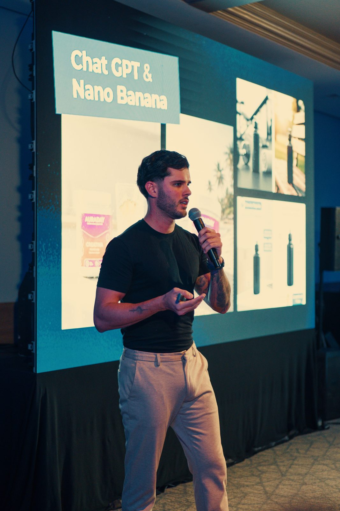

Claude Fable 5.1: o que muda para quem opera agentes de IA nas empresas
A Anthropic lançou ontem o seu modelo mais avançado. O preço base não mudou — mas o custo de manter agentes trabalhando caiu até 45%. Aqui está a leitura prática, sem hype, de quem opera 34 agentes todos os dias.

O Claude Fable 5.1 é o novo modelo de ponta da Anthropic, lançado em 1º de setembro de 2026, três meses depois do Fable 5. As três mudanças que importam para empresas: o preço base se manteve (US$ 10 por milhão de tokens de entrada, US$ 50 na saída), a releitura de cache ficou 75% mais barata (US$ 0,25 por milhão), e — a consequência que interessa — cargas de trabalho de agentes ficaram até 45% mais baratas de rodar, segundo o anúncio oficial da Anthropic.
Eu opero uma agência com 34 agentes de IA em produção — atendimento, cobrança, conteúdo, monitoramento. Quando o custo de operação de agentes muda de faixa, isso não é notícia de tecnologia: é notícia de margem. Vou traduzir o lançamento pro que ele significa dentro de um negócio.
- Lançado em 1º/09/2026; mesmo preço base do Fable 5.
- Cache 75% mais barato → trabalho típico ~25% mais barato, agentes até 45%.
- Saltos grandes em tarefas de agente: Terminal-Bench-Science foi de 24,7% para 52,6%; uso de computador (OSWorld 2.0) de 36,1% para 41,7%.
- Menos travas indevidas: ~60% menos intervenções falsas de segurança por sessão no Claude Code.
- Disponível em Claude.ai, API, AWS, Google Cloud e Azure.
Por que o cache mais barato é a notícia de verdade
Um agente de IA não responde uma pergunta e vai embora — ele trabalha. Relê as instruções, o histórico da conversa, os dados do cliente, decide o próximo passo, executa, e repete isso dezenas de vezes por atendimento. Essa releitura constante de contexto é o cache — e era um dos maiores custos de manter um agente rodando o dia inteiro. Explico essa mecânica em detalhe na anatomia de um agente de IA.
Com o corte de 75% no custo do cache, a Anthropic afirma que operações altamente agênticas ficam até 45% mais baratas — sem trocar nada além do modelo. Pra quem tem um SDR de IA respondendo WhatsApp 24/7 ou uma régua de recuperação de vendas rodando sozinha, é o mesmo trabalho custando quase metade.
Preço base igual + cache 75% mais barato = o modelo novo não cobra pela melhora. Ele devolve margem pra quem já opera agentes.
O que os números de desempenho dizem (e o que ignorar)
Benchmark é fácil de virar hype, então vale filtrar o que tem tradução prática:
- Terminal-Bench-Science: 52,6% (o Fable 5 fazia 24,7%). Mede o modelo executando tarefas longas e técnicas de ponta a ponta num terminal — o tipo de trabalho que um agente de operação faz. Mais que dobrou.
- Terminal-Bench 4.0 (agentes): 55,8% contra 42,0%. Mesmo recado: a diferença do 5.1 aparece justamente em trabalho agêntico, não em bate-papo.
- OSWorld 2.0: 41,7% contra 36,1%. Uso de computador — o agente operando telas e sistemas como uma pessoa. Ainda longe de perfeito, mas avançando rápido; é a fronteira que vai destravar automação em sistema que não tem API.
- Humanity's Last Exam: 60,9% sem ferramentas (57,8% antes). Conhecimento e raciocínio puro. Melhorou, mas esse número muda pouco a sua operação.
E um dado que quase ninguém vai comentar, mas que afeta o dia a dia de quem automatiza: a Anthropic reporta cerca de 60% menos intervenções falsas de segurança por sessão no Claude Code. Menos falso positivo significa menos automação travada no meio do caminho por excesso de zelo — na prática, menos guardrail disparando à toa (escrevi sobre guardrails de agentes e por que eles são projeto, não acessório).
Fable 5.1 × Mythos 5.1: qual é a diferença?
Nas palavras da própria Anthropic: são o mesmo modelo com níveis diferentes de salvaguardas. O Fable 5.1 é o de disponibilidade geral — o que você acessa no Claude, na API, na AWS, no Google Cloud e no Azure. O Mythos 5.1 é restrito a organizações verificadas em programas específicos de cibersegurança e ciências da vida, por enquanto limitados aos Estados Unidos. Pra empresa brasileira, o modelo relevante é o Fable 5.1 — e ele já está disponível.
O que fazer com essa notícia na sua empresa
- Se você já opera agentes: teste a migração num processo só e compare custo por atendimento antes e depois. A economia de cache aparece rápido em qualquer agente que conversa muito ou executa muitos passos. É o mesmo método de sempre: medir, comparar, escalar o que funcionou.
- Se você ainda não opera: o custo de entrada acabou de cair — o argumento "IA é cara pra rodar 24/7" ficou 45% mais fraco. O caminho de implantação continua o mesmo que descrevi em como implantar agentes de IA em 30 dias: um processo com dor clara, piloto assistido, medição.
- Se você está orçando: os valores em reais que discuto em quanto custa IA para empresas continuam de pé na implantação — o que caiu foi o custo recorrente de infraestrutura do agente, que é justamente a parte que assusta no longo prazo.
A leitura de quem opera
Todo lançamento de modelo vem com a mesma pergunta: "isso muda alguma coisa pra mim?". Na maioria das vezes, a resposta honesta é "pouco". Dessa vez é diferente por um motivo específico: o 5.1 melhorou exatamente na direção do trabalho de agente — tarefas longas, uso de computador, menos travas falsas — e baixou o custo exatamente na conta que pesa pra quem roda agente em produção. Não é um modelo mais esperto pra conversar. É um modelo mais barato pra trabalhar.
Regra da casa continua valendo: só implanto o que roda na minha própria operação. O 5.1 entrou em teste aqui no dia do lançamento — e é assim que toda novidade de IA deveria entrar numa empresa: por um processo, com número antes e depois.
Perguntas frequentes
O que é o Claude Fable 5.1?
É o modelo de inteligência artificial mais avançado da Anthropic, lançado em 1º de setembro de 2026, três meses depois do Fable 5. Melhora principalmente o trabalho de agentes, o uso de computador e a pesquisa científica, mantendo o preço base do antecessor.
Quanto custa o Claude Fable 5.1?
US$ 10 por milhão de tokens de entrada e US$ 50 por milhão na saída — igual ao Fable 5. A mudança é o cache: US$ 0,25 por milhão de tokens (75% mais barato), o que deixa trabalho típico ~25% mais barato e operações de agentes até 45%.
Por que o cache mais barato importa para agentes?
Porque um agente relê o próprio contexto a cada passo que executa. Esse reler é o cache — quando ele fica 75% mais barato, manter um agente trabalhando o dia inteiro custa muito menos.
Qual a diferença entre Fable 5.1 e Mythos 5.1?
São o mesmo modelo com níveis diferentes de salvaguardas. O Fable 5.1 é o de disponibilidade geral; o Mythos 5.1 é restrito a organizações verificadas em programas de cibersegurança e ciências da vida nos EUA.
Preciso migrar meus agentes para o 5.1?
Se a sua operação roda muitos passos de agente por dia, a migração tende a se pagar pela economia de cache. Teste num processo, compare custo e qualidade, e só então vire a chave na operação inteira.

Fundador da Gene Company e diretor da LINCE Performance. Especialista em agentes de IA para vendas, tráfego pago com ROI escalável, criativos de alta estética e criação de marcas. Santos/BR, atende Brasil e exterior. Fale comigo no WhatsApp →